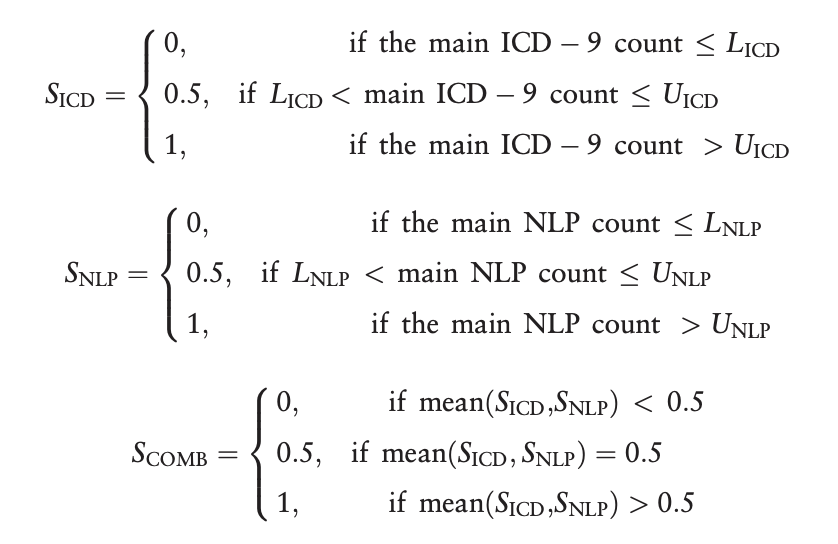
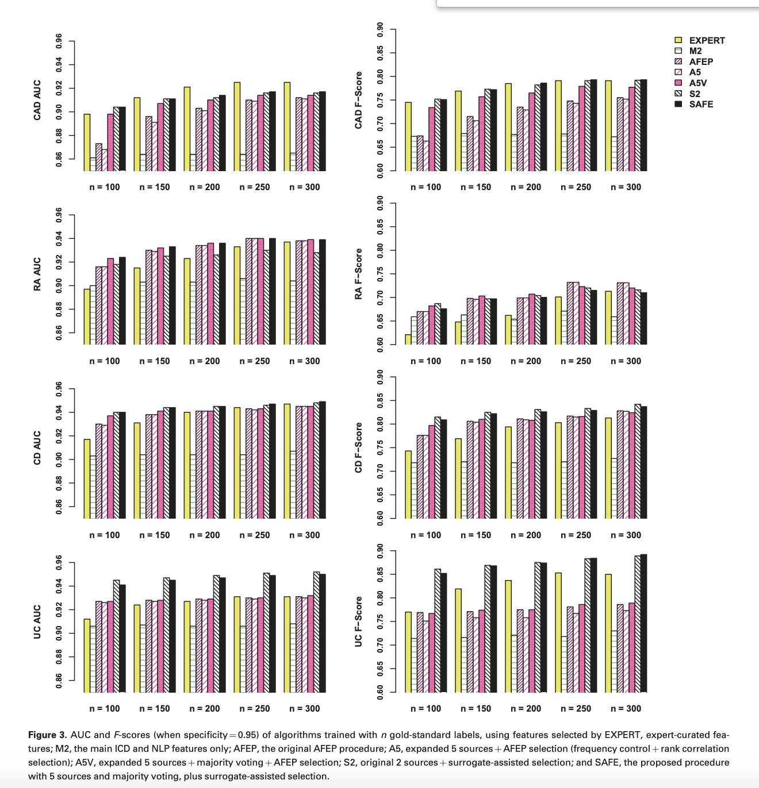

Surrogate-assisted feature extraction for high-throughput phenotyping
Website
https://academic.oup.com/jamia/article/24/e1/e143/2631516
Objective
To introduce a
high-throughput
unsupervised feature selection method, which improves the robustness and scalability of electronic medical record phenotyping without compromising its accuracy.
Keywords
Phenotype algorithms, EMR
Content
-
Process
->
Surrogate-Assisted Feature Extraction (SAFE) method selects candidate features from a pool
->
ICD9 + NLP counts (noisy surrogates) ->
Silver-standard labels
->
If candidate feature is highly predictive to silver-standard labels:
Select as output.
-
Desired output
-
Selection could be done without using any gold-standard labels to reduce overfitting
-
Only 100–
200 goldstandard labels would be needed to train a generalizable algorithm with the selected features.
-
Difficulties
-
Assigning phenotypes based on ICD-9 codes often results in misclassification and hampers the power of hypothesis tests in subsequent genomic or biomarker studies.
-
Labeling is both labor-intensive and timeconsuming.
The training sample sizes in previous studies typically ranged from 400 to 600,
and have occasionally reached several thousand.
-
Autimated Feature Extraction
-
Concept collection
To form a set of candidate features from Wikipedia, Medscape, Merck Manuals Professional Edition, Mayo Clinic Diseases and Conditions, and MedlinePlus Medical Encyclopedia. These 5 sources typically yield around 1000 UMLS concepts as candidate features for each phenotype.
-
Generating NLP data
-
Only consider positive mentions that confirm the presence of a condition, performance of a procedure, use of a medication, etc.
-
Negated assertions, family history, and conditional problems such as drug allergies are not counted
-
Feature selection
-
From the NLP output, identify the concepts that appear in at least 3 of the 5 knowledge sources
-
The concept must be mentioned in at least 5% of the narrative notes where the target phenotype is mentioned.
-
The narrative notes must be mentioned in the notes of no more than 50% of all patients.
-
To create silver-standard labels:

S ::= the silver- standard label, which can be viewed as a bespoke “
probability”
of having the phenotype.
L_ICD, L_NLP, U_ICD, U_NLP ::= lower and upper thresholds that can be determined via domain knowledge or percentiles of the observed data.
-
Repeatedly sample 2M patients from the extreme subsets and train the models many times for each S. A feature is selected only if its coefficient is not zero at least 50% of the time, averaged over the above repeated fittings and 3 choices of S.
-
These selected features, along with the main ICD-9 and NLP counts, the total number of notes, and the age and gender of the patient, denoted by F_select
-
Training phenotyping algorithm with gold standard labels
-
The final algorithm is then trained by fitting an
adaptive elastic-net penalized logistic regression
:
-
Predictor:
F_select;
-
Response: gold-standard labels.
-
Count variables transformed by x ->
log(x+1).
-
Select tuning parameters via the
Bayesian information criterion
.
-
Compared Result
